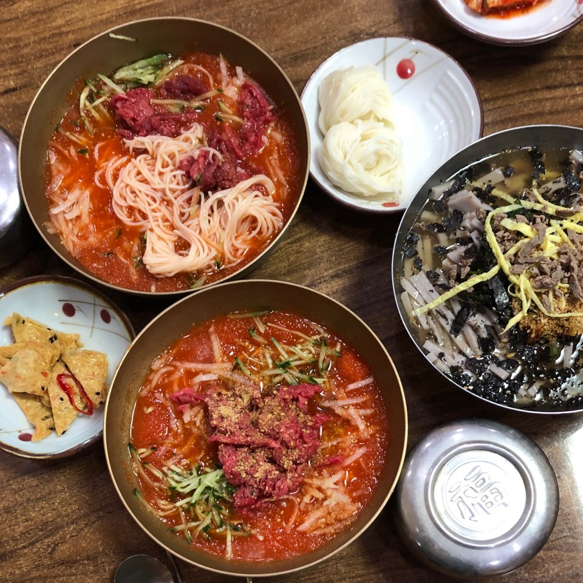
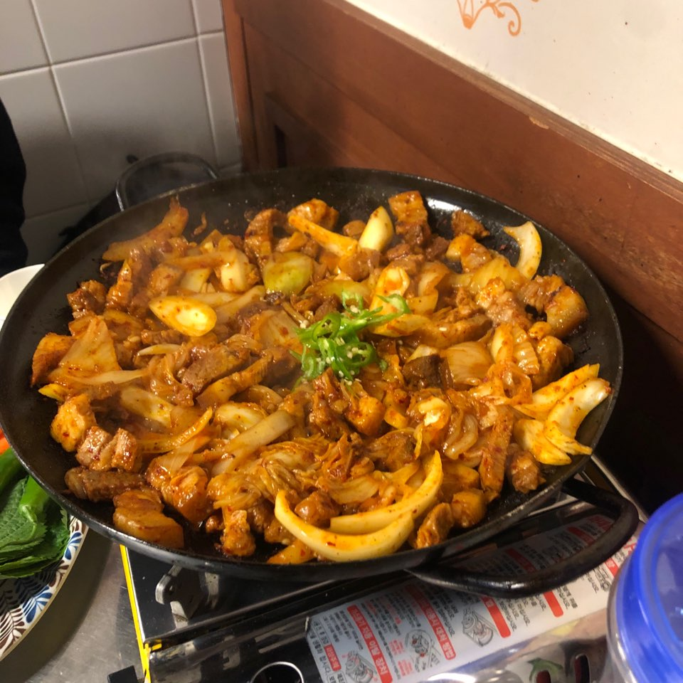
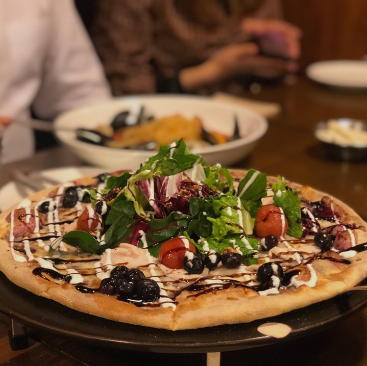
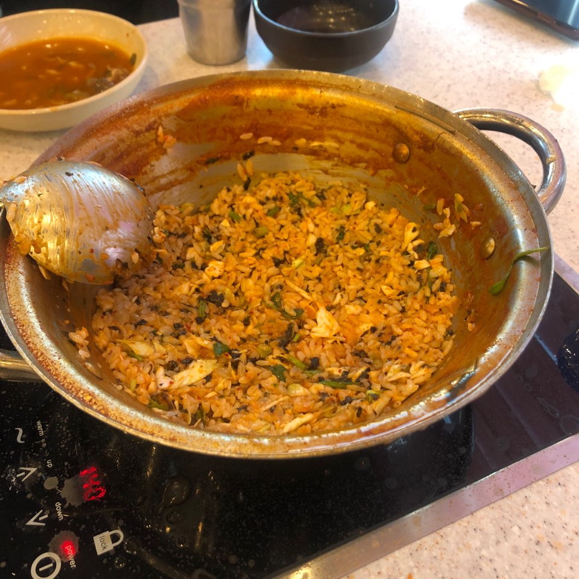
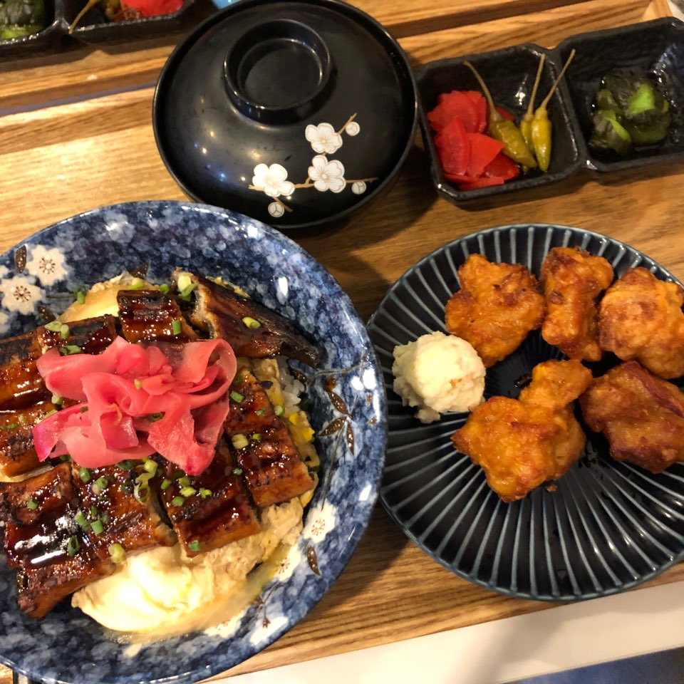
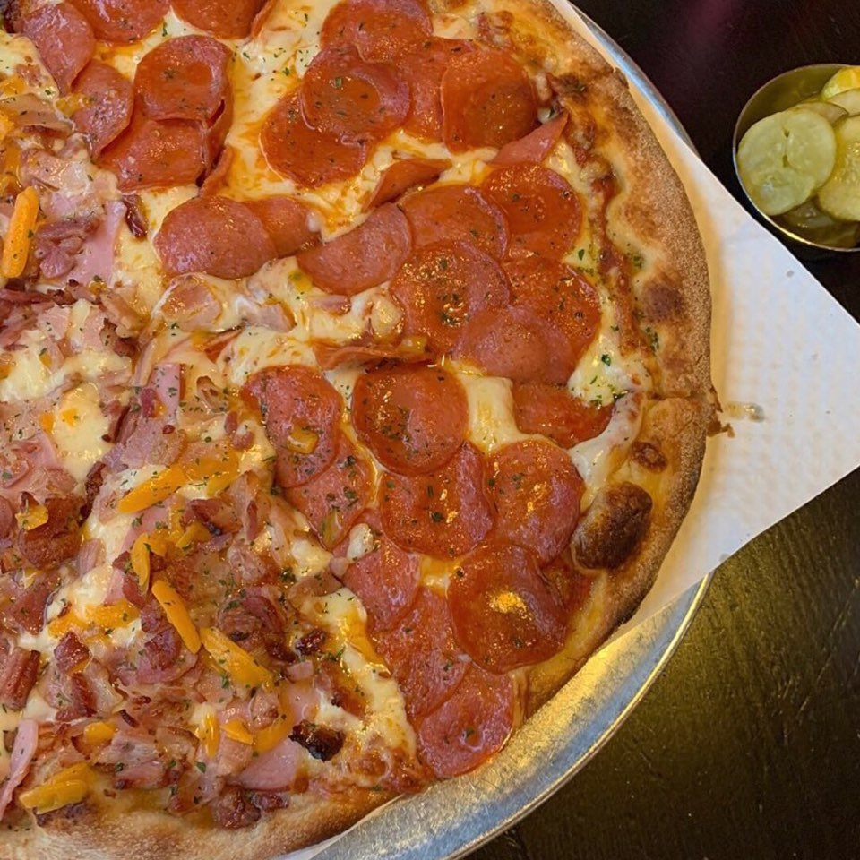
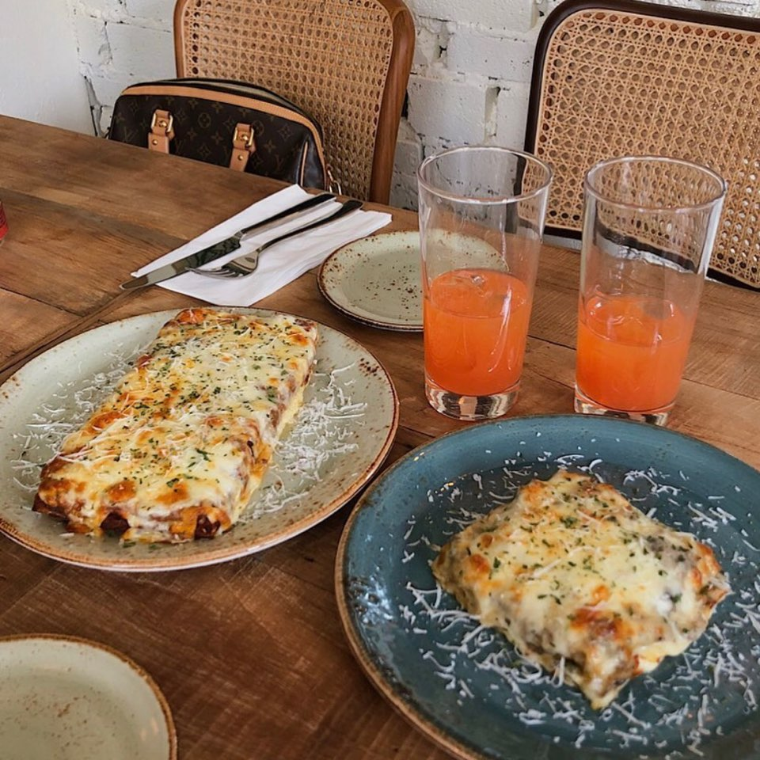

home
About me
Favorite
Contact
Travel
Food
평소에 여행다니는 것도 좋아하고,
맛집 찾아다는 것도 너무너무 좋아하는데요.
그동안 찍었던 사진들을
정리해놓은 페이지입니다.
즐겁게 구경하시고 가세용~!
click "travel"or"food"!
travel
food
-travel-
Paris
Sydney
Osaka
Hongkong
Singapore
London
Kotakinabalu
Belgium
-food-
서인영이 뽑은 최근 1년간의 맛집리스트입니당.
함양집(경주)
개미집(부산)
정통집(신촌)
라피자노스트라(선릉)
봉덕칼국수(의왕)
낭만식당(안양)
야바이(신촌)
존앤진피자(행궁동)
파이부(연남)
 SydneySydney
SydneySydney